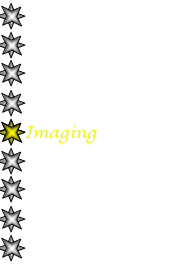
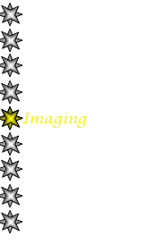
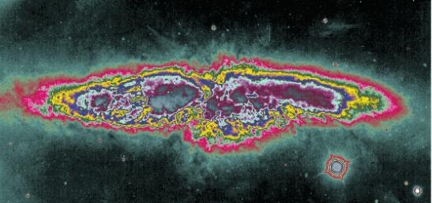

|
Imaging Handler |
|
Imaging Handler is probably the most complex piece that comes with Najm. It is responsible for loading FITS image data for an object, creating a color scale and color map, then using them to create and display an image of the object.
Color Scaling:
Once you invoke Najm image handler you'll see the image along with its
color histogram. Image Handler then allows you to choose your color scale from among several supported ones
(linear, logarithmic, square root, square, histogram equalized, and invert
linear). Next release of Najm will even allow you to create your own scaling
algorithm in python (still under construction!).
){kind=link}
Color Mapping:
To be able to visualize astronomical images, you need to assign colors to data values
in the image array, this is when color maps come handy.
Najm Image Handler supports 18 different built in color maps, custom color maps loaded from text files, and a unique advanced color mapping technique
that allows you to start from a built in color map and customize it using linear interpolation with
a few mouse clicks. You can also control the contrast and bias of the result
image.
){kind=link}
){kind=link}
Color mappColor mapping (Lefft) and Advanced Color map customization Right)
Figure below shows a bizarre image for M82 (Cigar Galaxy) which uses a color map created using Najm advanced color mapping feature:
